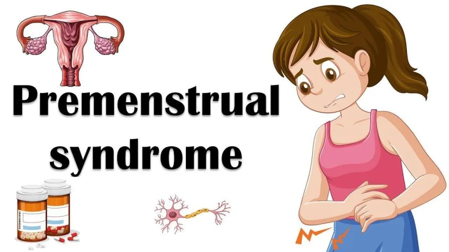
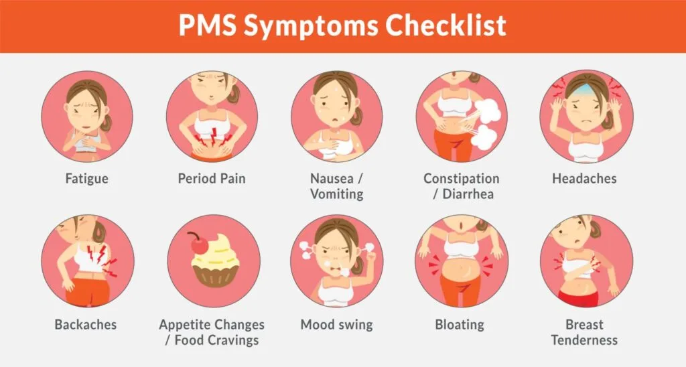

Expanded Nursing Uganda Explanation
Premenstrual Syndrome should be understood beyond a short definition. Link the concept to patient history, focused assessment, common risks, nursing priorities, documentation and evaluation of outcomes.
01 PREMENSTRUAL SYNDROME
Premenstrual syndrome is a group of symptoms both physical and psychological that occur before menstruation .
Symptoms can range from mild to severe and occur during the luteal phase ( begin 7-14 days before the onset of menses ) and disappear after the onset of menses.
Majority of women experience premenstrual syndrome but it is considered severe if it impairs work, relationships or usual activities.
02 Causes of Premenstrual Syndrome
The cause of premenstrual syndrome remains unknown/unclear although changes in the hormonal level, Vitamin B6 and calcium deficiency have been suspected.
03 Signs and symptoms of Premenstrual Syndrome
Premenstrual syndrome presents with both physical and psychological symptoms as outlined below.
Psychological Symptoms : These are emotional and mental aspects affected by PMS, including irritability, depression, tension, anxiety, fatigue, and difficulties in concentration.
- Irritability : Feelings of annoyance, impatience, and mood disturbances.
- Depression : Persistent feelings of sadness, hopelessness, and despair.
- Tension : Increased stress levels and heightened emotional response.
- Anxiety : Experiencing nervousness, unease, or a sense of impending doom.
- Fatigue : A general feeling of tiredness, weakness, and lack of energy.
- Inability to Concentrate: Difficulty focusing, poor attention, and mental fog.
Physical Symptoms : Physical manifestations of PMS, such as abdominal bloating, perceived weight gain, breast swelling, acne, headache, and migraines.
- Abdominal Bloating: Swelling or feeling of fullness in the abdominal area.
- Feeling of Weight Gain : Perceived increase in body weight, often due to fluid retention.
- Swelling of Breasts : Breast tenderness and enlargement due to hormonal changes.
- Acne : Skin breakouts and increased oiliness.
- Headache : Pain or discomfort in the head.
- Migraine : Severe headaches often accompanied by other symptoms like nausea and sensitivity to light.
04 Management of Premenstrual Syndrome (PMS)
A woman is considered to have PMS if her symptoms interfere with the activities of daily living.
Non-pharmacological Strategies
Diet :
- Increase intake of vitamin B6, carbohydrates, fruits, and vegetables, such as legumes and cereals.
- Avoid consumption of caffeine.
- Refrain from smoking and limit alcohol intake.
- Reduce overall salt intake.
- Educate patients about the benefits of a diet rich in omega-3 fatty acids and low in saturated fats.
- Encourage the consumption of fruits and vegetables.
Physical Exercises:
- Engage in regular physical activities, including aerobic exercises and walking.
- Encourage exercises to relieve bloating, irritability, and insomnia.
Education and Counseling:
- Provide education about the causes, treatment, and prevention of PMS.
- Offer counselling to address emotional aspects and coping mechanisms.
Stress Management:
- Implement relaxation techniques and mental imagery to manage stress.
General Measures:
- Educate the patient about premenstrual syndrome.
- Encourage regular exercises to relieve bloating, irritability, and insomnia.
- Advise a diet rich in carbohydrates, calcium, omega-3 fatty acids, and low in saturated fats.
- Avoid caffeine to reduce breast tenderness and irritability.
- Reduce the consumption of sugar, alcohol, and salt.
- Restrict salt intake to decrease abdominal bloating and fluid retention.
- Encourage the consumption of fruits and vegetables.
- Advise patients who smoke to quit.
Pharmacological Strategies
Combined Oral Contraceptives (COCs): Use hormonal contraceptives to regulate hormonal fluctuations.
Antidepressants :
- Consider selective serotonin reuptake inhibitors (SSRIs) like fluoxetine (20 mg once daily) or paroxetine (20 mg once daily) if PMS presents with depression and anxiety symptoms.
- Start SSRIs at the time of ovulation and stop on the first day of menses.
- Monitor for side effects such as insomnia, fatigue, and loss of libido.
Diuretics :
- Recommend diuretics, such as furosemide (20-40 mg), for patients with weight gain.
- Spironolactone (50-100 mg daily for 7 days) may help reduce fluid retention.
Vitamins :
- Consider Vitamin B6 (50-100 mg once daily) and calcium (600 mg twice daily) to reduce physical symptoms.
05 Nursing Uganda Clinical Lens
Use Premenstrual Syndrome as a practical nursing topic, not only a memorized definition. Start with normal structure and function, then connect it to assessment findings and disease.
- What to understand first: define premenstrual syndrome, identify the normal or expected pattern, then explain what changes when the patient is unwell.
- Why it matters in care: the nurse must recognize risk early, explain findings clearly, document accurately and know when to escalate.
- How to revise it: connect each point to assessment, nursing diagnosis or care problem, intervention, rationale and evaluation.
06 Assessment Guide
- Relevant inspection, palpation, movement, auscultation, vital signs or neurological checks.
- Normal findings, abnormal findings and what each abnormality may indicate.
- Patient history, risk factors and how the body system affects other systems.
07 Nursing Priorities, Rationales and Outcomes
- Use anatomy to explain symptoms and guide focused assessment.
- Recognize findings that need urgent escalation.
- Teach the patient using simple body-system language.
The rationale for these priorities is patient safety: nursing actions should prevent deterioration, reduce discomfort, support recovery and create clear evidence for the next caregiver.
- Expected outcome: The learner can explain normal function, identify abnormal signs and connect them to nursing action.
08 Patient Teaching and Revision Check
- Explain premenstrual syndrome in simple language the patient or caregiver can repeat back.
- Teach warning signs, medicine or follow-up instructions, hygiene or lifestyle points where relevant.
- For exams, prepare a short answer using: definition, causes or risk factors, signs, assessment, management, complications and prevention.
- For ward practice, document baseline findings, actions taken, patient response and the plan for review.
Illustrations and Diagrams (3)



Related Video Lectures
Watch nursing lecture videos on YouTube for this topic. Opens in a new tab.
Watch on YouTubeExternal link: YouTube may use its own cookies and terms. Nursing Uganda is not affiliated with YouTube.